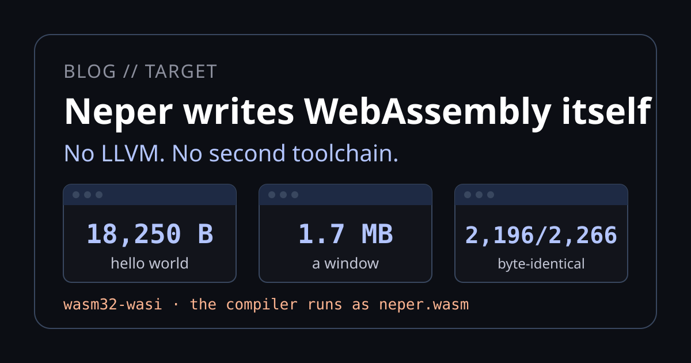
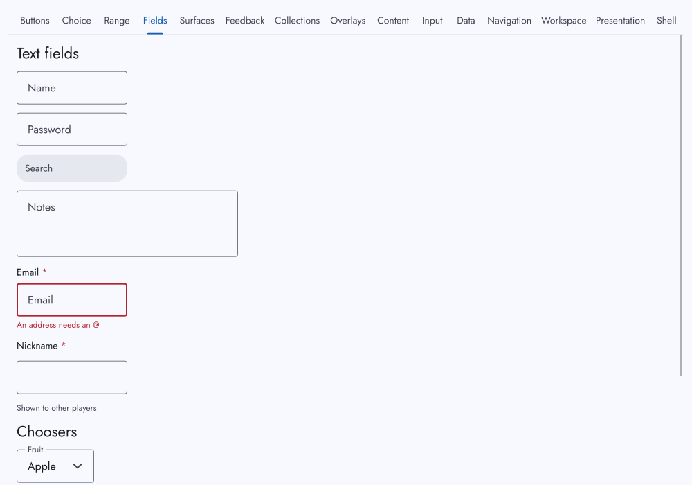
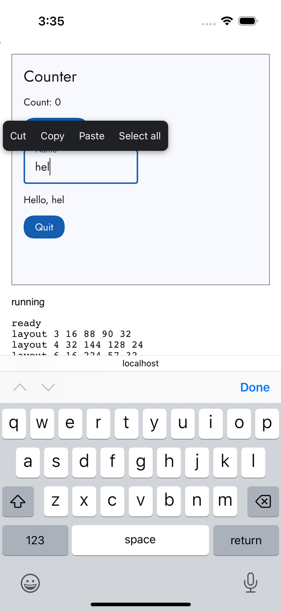

Neper writes WebAssembly itself

The compiler that writes Windows, Linux and macOS executables now writes WebAssembly the same way: its own emitter and its own file writer, with no LLVM, no Emscripten and no separate linker. A hello world is 18,250 bytes. A window with the real renderer and widgets is 1.7 MB. The compiler itself, compiled to WebAssembly, writes the same executables as the native one, byte for byte, and the same widgets run in a canvas on a phone.
One command
The target is wasm32-wasi: WebAssembly with WASI preview 1, the interface that Node and most runtimes already implement. It is one more argument to the command that writes native files.
$ neper emit-executable hello.e . wasm32 wasi hello.wasm --release
executable written
$ node lib/wasm/run-wasm.mjs hello.wasm
hello, neperThree runs on a Windows machine took 497, 409 and 339 ms and wrote 18,250 bytes. The same program is 12,600 bytes as a native Windows executable. Nothing else was installed for it: no clang, no wasm-ld, no SDK. The only thing that has to exist at run time is a WebAssembly engine, which Node 24 and every current browser provide.
How it is built
A whole-program emitter
The compiler already turns a program into one typed intermediate representation, NIR, for its other back ends. src/wasm.e writes a module from it directly: types, imports, functions, data, and a name section so that a trap names the Neper function.
Structured control flow
WebAssembly has no goto. Every function the emitter writes is structured: loops, blocks and ladders recovered from the program's control-flow graph, with a dispatch-loop fallback that the test suite forces on to keep it honest. The compiler's own 3,330 functions all come out structured.
The data layout does not change
A pointer is still eight bytes in memory, so struct layout, compile-time results and checked usize arithmetic are identical to x64. In an expression a pointer is an i64 wrapped to i32 at each memory access. The price is one wrap per access and 4 GiB of memory; the way out is wasm64.
The runtime is Neper
What a program asks of its host lives in lib/e/os.wasi.e, an ordinary Neper file, the way NeperOS's is.
What a module can do
Files, directories, the clock, random numbers and the environment go through WASI. Everything else WASI does not offer comes through a small import module, neper_host, that the runner supplies. These are the parts that were built and exercised:
Sockets and a poller
TCP and UDP, name resolution, and the poller that e.net sits on. The network fixtures (TLS, SMTP and POP3 among them) run in a module and talk over real loopback sockets.
Processes and pipes
A module can start a program, read its output through a pipe and wait for it, under Node. A browser page has no processes, so there the same calls answer Unsupported.
Threads
--threads writes a module with shared memory and real atomics. The thread runtime is Neper code; the runner starts each thread as a worker. In a page it needs the cross-origin isolation headers.
System information
CPU times, memory, uptime, disks and the process table come from the runner as the same text /proc gives, so Linux's parsers read them unchanged. A page that has none answers Unsupported.
Checked against native
A sweep builds every link fixture for the host and for WebAssembly, runs both, and compares the exit status, standard output and standard error. Of 1,142 fixtures in the threaded sweep, 1,075 matched at the last full count; each of the remainder was then either fixed or written down with its cause:
| What differs | Why, and whose limit it is |
|---|---|
| Memory-mapped files, file locks, signals, dynamic libraries | WASI has none of them. The program gets Unsupported rather than a pretence: a copy cannot keep a mapping's promise. |
| Desktop services: opening a URI, revealing a file, the trash | A module has no desktop. Windows and GPU fixtures print the unsupported line. |
| Reading a font by a host path | A module cannot reach C:\Windows\Fonts or a Linux path outside its preopened folders. |
| Killing a process tree on Windows | Node on Windows cannot kill a descendant that outlived its root. |
The sweep keeps these in a file, tests/wasm/sweep-expected.tsv, and reports a run as expected only when the host and both exit statuses match a row. A new regression in one of them therefore still shows as a failure.
The Linux suite and the WebAssembly sweep pass in CI at the last full run on master, and a curated set also runs on macOS 14, plain and threaded. That is where a difference between epoll and kqueue turned up: adding an already-registered file descriptor replaces it silently on macOS, so the poller now keeps its own table.
The compiler runs as WebAssembly
The strongest test of an emitter is the largest program you have. src/main.e, the compiler, written for wasm32-wasi, is a 4,689,531-byte module of 3,330 functions. Run under Node, it compiles programs for other targets:
| Result of 2,266 executables written by neper.wasm | Count |
|---|---|
| Byte-identical to the native compiler's | 2,196 |
| Differing only in the embedded compiler identity (device code carries the compiler's own checksum) | 58 |
| Refused, with the same diagnostics as the native compiler | 10 |
Different in one constant that the native compiler gets wrong at its default worker count (gpu_tensor) | 2 |
It also compiles itself: neper.wasm writes src/main.e for wasm32-wasi and the bytes equal the module the native compiler wrote, a fixed point. It costs time and memory. Writing the compiler for x64 Windows takes 1.6 s native and 5.6 s as WebAssembly, with a 986 MB working set. For a WebAssembly target it is 1.8 s against 3.1 s.
In a browser, and on a phone
The same e.ui widgets that draw a native window draw into a canvas: the renderer produces CPU frames, the page presents the newest one each animation frame, and input crosses to the module through a shared ring. A module that is a whole gallery of widgets is 6.5 MB in release form; here it is in Chrome:

.wasm file in a Chrome canvas. The page is cross-origin isolated, which threads need.A canvas is not editable, so a phone shows no keyboard for it. The page keeps a hidden text field beside it and forwards what that field receives. We checked that on an Android phone, and it found a bug that no desktop test could. Android's keyboard does not compose text for Bulgarian or English; when you tap a suggestion it sends one delete event that removes the whole half-typed word, then the replacement. The window turned each delete event into one Backspace, so correcting outdige to outside left the old letters in the program. The text field now keeps what was typed and the page reads the edit from the field's value before and after.
A finger has no right button, so a hold selects the word, dragging extends the selection, and on lift a small toolbar offers Cut, Copy, Paste and Select all. We confirmed it on the Android phone, then drove the same page in Mobile Safari on an iPhone simulator on a macOS runner (iOS 17.5, through Appium): typing on the on-screen keyboard, Backspace and the hold toolbar all reach the program.

Not yet on a real iPhone, and not with a composing keyboard such as Japanese or Chinese. Selection has no draggable end handles: that belongs in e.ui's text field, which lists touch handles as not built. A page has no sockets or processes, so those calls answer Unsupported. A module's memory is at most 4 GiB, and there is no GPU device inside one.
Try it
$ neper emit-executable app.e . wasm32 wasi app.wasm --release
$ neper emit-executable app.e . wasm32 wasi app.wasm --release --threads
$ node scripts/serve-wasm.mjs --isolated # a page with the headers threads needNode 24 or a current browser runs the result. The window page is tests/wasm/browser/ui_counter.html, and lib/wasm/neper-host.js is the host a page of your own passes the module to.
Honest limits of these numbers
- The sizes are release builds of the programs named, read on one Windows machine. The native window figure, 2.7 MiB, and the WebAssembly window figure, 1.7 MB, are not a like-for-like comparison: they include different platform code.
- 1,075 of 1,142 is the threaded sweep at the last full count. Later changes fixed more fixtures and wrote down the rest, but we have not re-counted every one, so the figure is a floor.
- The compiler comparison is for x64 Windows and Linux outputs plus WebAssembly's own, on one machine. The memory figures are Node's: V8 keeps the optimized code and the engine commits all memory up to the highest byte touched.
- The phone checks are one Android phone and one iPhone simulator, with a Bulgarian and an English keyboard. The simulator taps keys one at a time and cannot show a real keyboard's autocorrect.
- The narration and captions of the video are a synthetic voice.
Sources
- The emitter:
src/wasm.e,src/wasm_code.e. The host half of the runtime:lib/e/os.wasi.e,lib/e/proc/sys/host.wasi.e. - The runners:
lib/wasm/run-wasm.mjs,lib/wasm/run-wasm-host.mjs(Node) andlib/wasm/neper-host.js,lib/wasm/window.js(a page). - The checks:
scripts/wasm-sweep.sh,scripts/wasm-compiler.sh,tests/wasm/sweep-expected.tsv,tests/wasm/window_edits.mjs,.github/workflows/ios-sim.yml. - The decisions behind it are in
docs/decisions.md, D5213 (the design), D5640 (the compiler as WebAssembly), D5835 and D5872 (what stays different), D5890 and D5891 (the phone keyboard and touch), and D5900 (the iPhone simulator).
The sizes and the phone checks were measured on October 26 and 27, 2026; the compiler-as-WebAssembly and sweep figures on October 25, when that work landed. All of them drift. If one here is wrong or out of date, we want to know.